Sounds and moves from the dance video
Each card is one sound as the app plays it (sounds/video/): where it was cut and how it is triggered.
Play it and check that it starts on the syllable and does not run into the next one.
cut start cut end (spectrogram of the vocal track around the cut, 0.2 s margin each side)
How the sounds play (beat mode)
The song's vocal goes the same way in every bar. A hit (a swipe of an arm, or the start of a pose) plays the sound of the beat of the bar it lands on, at most one per beat. Holding a pose keeps the line going on every beat, and so does any movement in the picture, even a dancer the pose tracker does not see or a move that is no known gesture; a still picture is silent. The three phrases have their own moves and are not cut while they play.
Beat 1 is sung two ways. In most bars it is one ab; in bars 1, 3 and 8 of the video it is ab ab over beats 1 and 2.
A hit on beat 1 plays ab at once. If both arms hit within 0.25 s of it (hands to the chest, both arms up, a left and a right swipe together),
the second ab follows on beat 2 in place of been: together they are the ab-ab sound (group in config.yaml).
The dance opens with ab ab: nothing plays until that move (both hands on the chest, opening in config.yaml) is seen, and it then becomes beat 1 of the bar. The opening is forgiving: one clear frame of the move is enough, freer versions (hands lower or crossed a little, both forearms up) count when held for 0.3 s, and the K key teaches the app your own ab ab. Restarting the loop or the video closes that gate again, and so does the end of the senkron (10 bars, senkron in config.yaml); the O key opens it by hand.
Before the dance (the senkron) starts only the individual motions sound (a hand up plays ab, individual in config.yaml); they do not start it, and once it has started they are silent.
The loop's first beat is beat 1. Press R when the dance starts, or B on the dancer's 1, to line the bar up.
The old way, one move per sound, is in config.gestures.yaml.
What the app plays on dansonic.mp4
run.py --source dansonic.mp4 plays these 38 sounds. 33 are the same sound as the original at that beat, 5 differ (red). Video seconds, bar.beat of the original's grid; the second ab of a double is the tail of ab-ab.
| Video s | Bar.beat | Lands | App plays | Because | Original plays |
|---|---|---|---|---|---|
| 2.31 | 1.1 | a 16th after | ab | opening: hands_chest | ab (1st of ab ab) |
| 2.69 | 1.2 | on the beat | ab-ab | opening: hands_chest, both arms | ab (2nd of ab ab) |
| 3.19 | 1.3 | on the beat | thin | movement in view | thin |
| 3.68 | 1.4 | on the beat | wha-been | squat_wide held | wha-been |
| 4.18 | 2.1 | on the beat | ab | squat_wide held | ab |
| 4.68 | 2.2 | on the beat | been | right_arm_diag held | been |
| 5.18 | 2.3 | on the beat | thin | right_arm_diag held | thin |
| 5.67 | 2.4 | on the beat | wha-been | right_hand_head held | wha-been |
| 6.17 | 3.1 | on the beat | ab | right_hand_up | ab (1st of ab ab) |
| 6.67 | 3.2 | on the beat | been | right_hand_up held | ab (2nd of ab ab) |
| 7.17 | 3.3 | on the beat | thin | right_hand_up held | thin |
| 7.66 | 3.4 | on the beat | wha-been | movement in view | wha-been |
| 8.16 | 4.1 | on the beat | ab | movement in view | ab |
| 8.66 | 4.2 | on the beat | been | movement in view | been |
| 9.16 | 4.3 | on the beat | thin | movement in view | thin |
| 9.66 | 4.4 | on the beat | wha-been | movement in view | wha-been |
| 10.15 | 5.1 | on the beat | ab | movement in view | been |
| 10.65 | 5.2 | on the beat | been | movement in view | been |
| 11.15 | 5.3 | on the beat | thin | movement in view | thin |
| 11.65 | 5.4 | on the beat | wha-been | movement in view | wha-been |
| 12.14 | 6.1 | on the beat | ab | movement in view | ab-wha-two-been-thin |
| 12.64 | 6.2 | on the beat | been | movement in view | two-been-thin |
| 13.14 | 6.3 | on the beat | thin | movement in view | two-been-thin |
| 13.64 | 6.4 | on the beat | wha-been | movement in view | wha-been |
| 14.14 | 7.1 | on the beat | ab | movement in view | ab-ow-ab-ow-thin |
| 14.26 | 7.1 | a 16th after | ab-ow-ab-ow-thin | both_hands_up | ab-ow-ab-ow-thin |
| 15.63 | 7.4 | on the beat | wha-been | right_hand_up held | wha-been |
| 16.13 | 8.1 | on the beat | ab | left_hand_up held | ab (1st of ab ab) |
| 16.62 | 8.2 | on the beat | ab-ab | left_hand_up held, both arms | ab (2nd of ab ab) |
| 17.12 | 8.3 | on the beat | thin | left_hand_up held | thin |
| 17.62 | 8.4 | on the beat | wha-been | left_hand_up held | wha-been |
| 18.12 | 9.1 | on the beat | ab | left_hand_up held | been |
| 18.61 | 9.2 | on the beat | been | left_hand_up held | been |
| 19.11 | 9.3 | on the beat | thin | left_hand_up held | thin |
| 19.61 | 9.4 | on the beat | wha-been | left_swipe_down | wha-been |
| 20.11 | 10.1 | on the beat | ab | left_swipe_down | ab-wha-two-been-thin |
| 20.23 | 10.1 | a 16th after | ab-wha-two-been-thin | right_arm_side | ab-wha-two-been-thin |
| 21.73 | 10.4 | a 16th after | wha-been | right_arm_out held | wha-been |
The red rows: 6.67 s (bar 3) the original sings ab ab while the lead only raises the right arm, so the app plays ab and then been. It is the one double that does not follow the both-arms rule. 10.15 and 18.12 s (bars 5 and 9) the original starts these bars with been (been been) and the app plays ab, because beat mode follows the beat of the bar, not the syllable. 12.64 and 13.14 s (bar 6) the original sings the fill phrase for the second dancer; here the plain beat sounds play.
The senkron lasts 10 bars from the opening and stops with its last sound (22.1 s; the singing in the video ends at 21.8 s and the vocal track is silent from 22 s). After that nothing of the dance plays, whatever the dancers do, until the opening move is made again; the video's last five seconds are silent for the dance.
Nothing plays until the opening ab ab is seen (the hands to the chest, 2.4 s): no hit, held pose, movement in view or phrase. That moment is beat 1 and plays ab and then the second ab on beat 2; the first ab comes about 0.1 s after the video's own, because the move has to be seen first.
The second dancer is never detected as a pose, but her movement (9.7-13.6 s) keeps the line going on every beat.
The half-beat ow syllables only come with the phrase. Bar 8 plays ab and then ab-ab although both_hands_up goes off there too:
the phrase was already played one bar earlier, and its cooldown (2.5 s) keeps it from starting again.
1. ab — beat 1, one arm
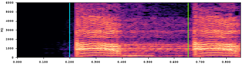
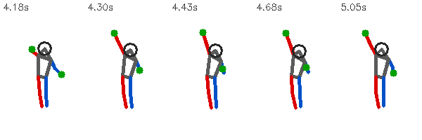
2. ab-ab — beat 1, both arms
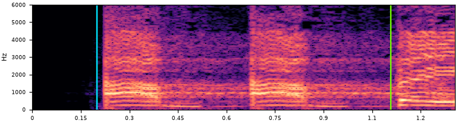
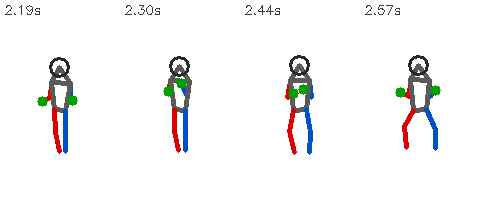
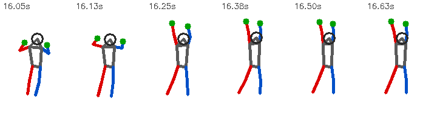
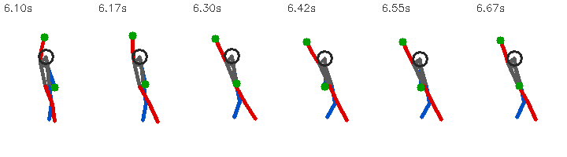
3. been — beat 2
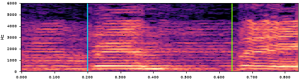
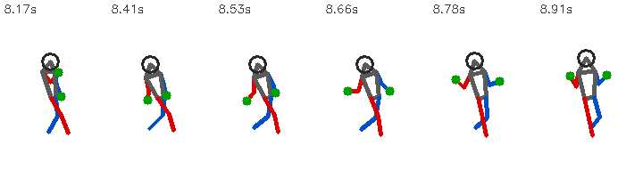
4. thin — beat 3
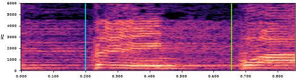
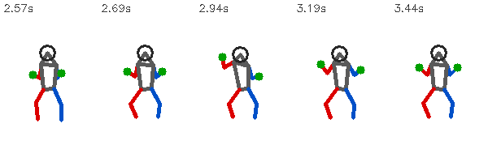
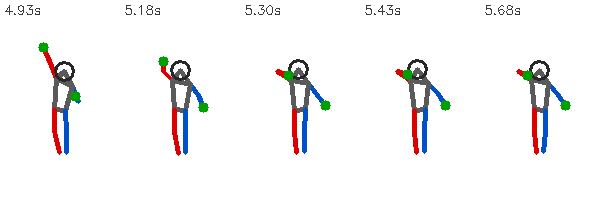
5. wha-been — beat 4
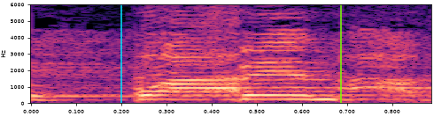
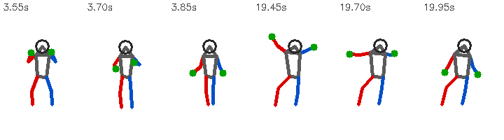
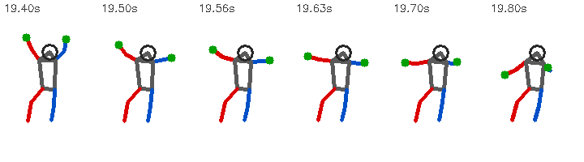
6. two-been-thin — phrase
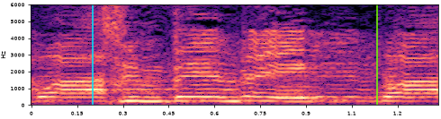
protect).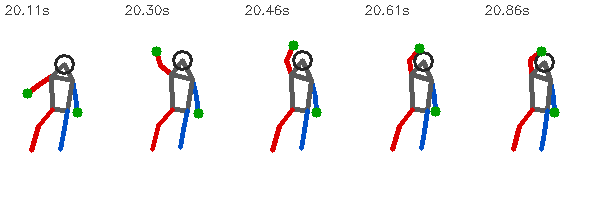
7. ab-wha-two-been-thin — phrase
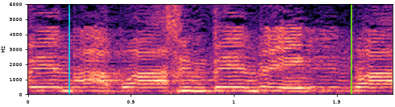
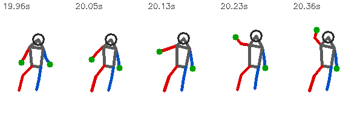
8. ab-ow-ab-ow-thin — phrase
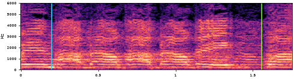
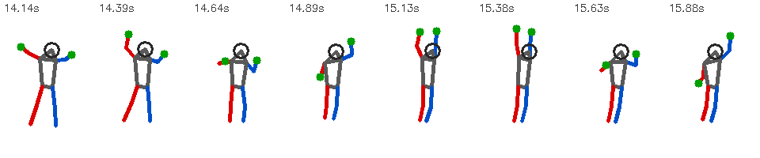
cooldown of 2.5 s so it does not start again there and the double plays instead. While the arms stay up the line keeps going on every beat.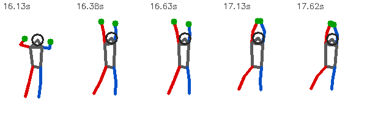